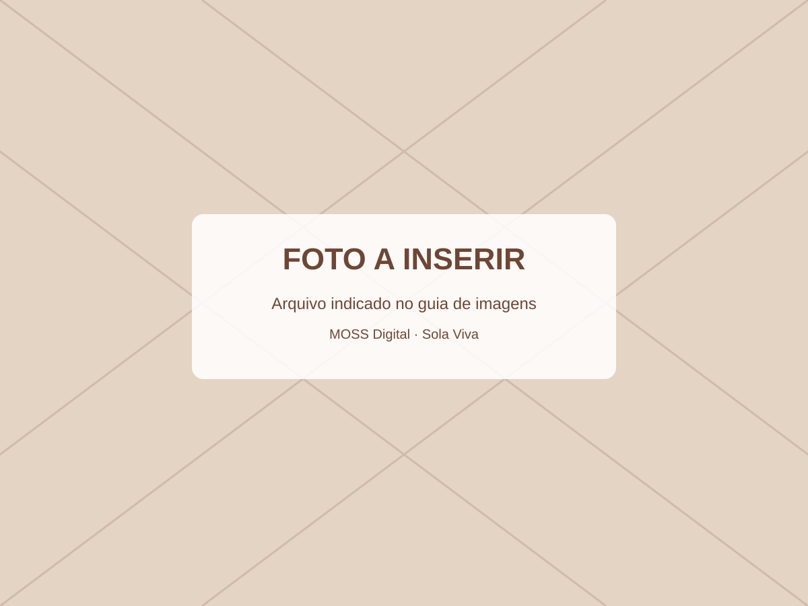

01
Restauração de calçados
Troca de solados, colagens e pequenos reparos.
Do sapato favorito à bolsa especial. Apresente serviços, receba pedidos e organize o andamento das peças em uma só página.
Pedir avaliação
capa-sapateiro.webpTroca de solados, colagens e pequenos reparos.
Alças, costuras, ferragens e acabamento.
Limpeza, hidratação e conservação ilustrativas.
Experimente cadastrar peças, escolher uma etapa e acompanhar o trabalho. Os dados ficam somente neste navegador.
⚠️ Use apenas dados fictícios: sem login, backup ou compartilhamento entre dispositivos.
A avaliação final é feita pela equipe. O formulário apenas prepara a mensagem do WhatsApp, sem enviar automaticamente.